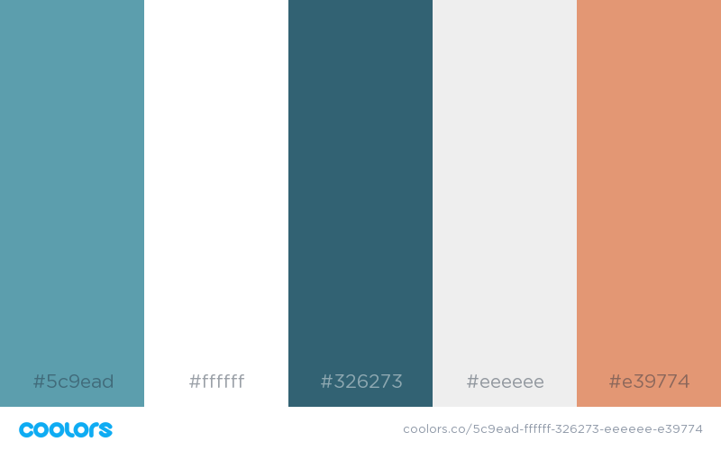

Variable
A variable is a storage container for a CSS value, such as a color or number. The syntax is written as $variable ('$'' indicates the item is a variable and 'variable' is the name you assign). You can use this code throughout the stylesheet after you have defined it.
For those who are color palette challenged, you can go to a website and find great ideas. I used Coolors to generate the colors for this website.

You can generate a .scss file and copy the values into your .scss file. The file generator creates hex values, RGB and HSL. As you may have noticed, the file assumes you are using the colors as variables!
Nesting
Nesting reduces repetition in code and makes writing CSS faster and easier. It also allows for a natural organization of styles.
A quick example of this is the footer below. In traditional CSS two rules would apply, the first would be to the footer element and the second would be to the text. e.g. footer { rules } footer p { rules }. In nesting, the rule for the footer p would sit inside the footer rules. The pictures below show each.
Partials
Partials are SCSS files that begin with an underscore (_partial.scss) and are not compiled into their own CSS files, but are rather imported into a main file. Partials allow you a way to work independently on a module and later seemlessly integrate your work into the main CSS file. This website is built entirely from partials. The main style.scss only has imports of partials.
Import
Use @import to compile all your partials into one file. The primary scss file will use the @import and reference the _partial.scss file. During compilation, the instructions in the partial will be compiled as well.
Mixins
Use @mixin for repetitious CSS, such as when vendor prefixes are required. Mixins are used in this website for the main page background formatting, media break formulas, the fixed grid formulas and the formula for clearing after floats.
Extend
Use @extend to change a few key aspects of otherwise identical elements - such as a group of buttons with different colors. There is an example at the bottom of this page. Three sets of three buttons were made with three different methods. One of these was an @extend method.
Operators
Operators allow you to use math calculations in your CSS - such as defining the width of various parts of a layout. Operators were used in formula calulculations for the fixed grid example and the media break for example, as well as others.